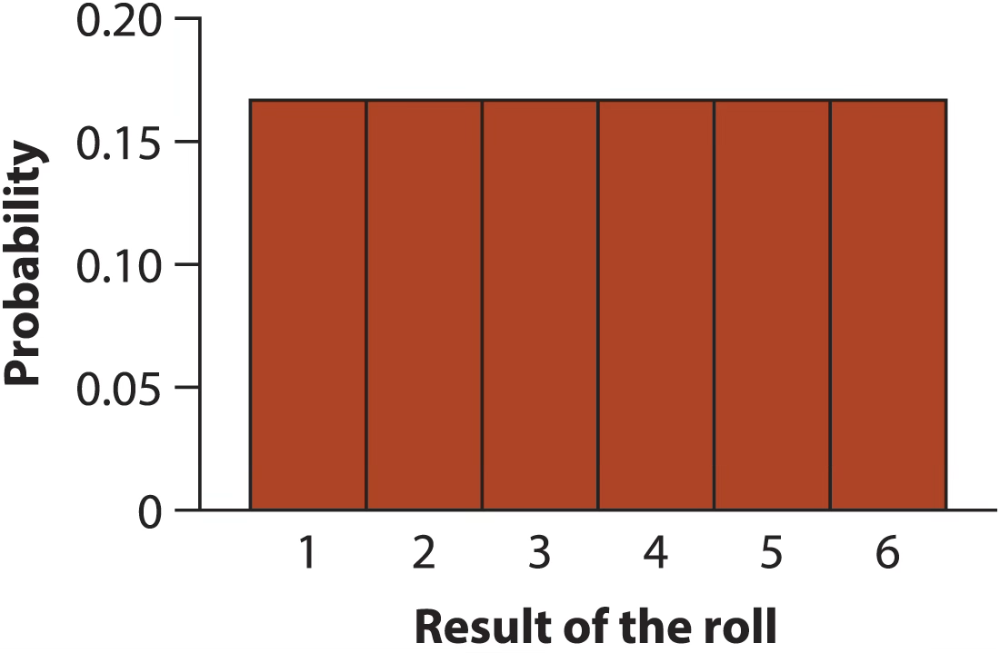
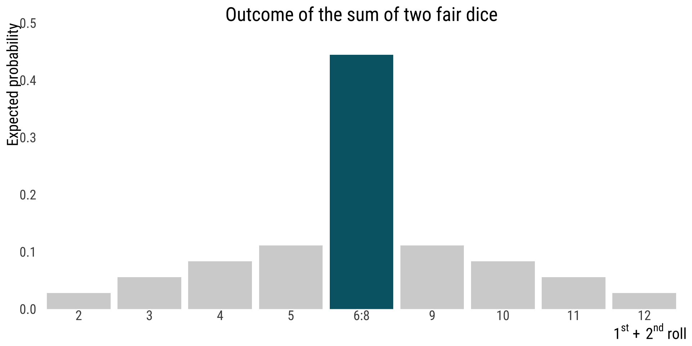
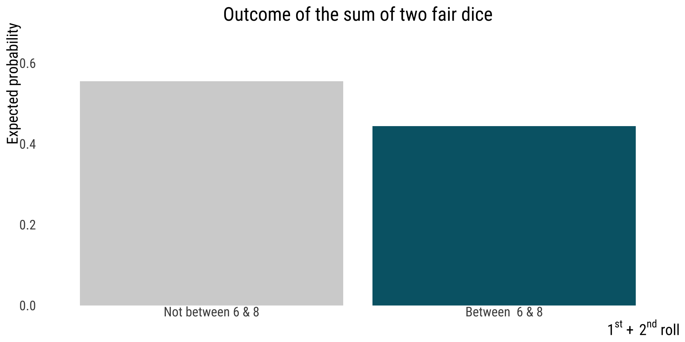

Acknowledgments: many code snippets borrowed from Y. Brandvain
Author
Bárbara D. Bitarello
Published
October 6, 2025
Keywords
Probability - Foundational Concepts
Outline
Definition(s) & Foundational Concepts
Probability vs. Odds
Probability as long-term frequency
Random trials
Types of events (exclusive and non-exclusive)
Probability distributions x probability densities x proportions
Probability rules
the addition principle
the general multiplication principle
Recap
Statistics and probability are not intuitive. Our brains do a bad job of interpreting data
we see patterns in random data
we tend to be overconfident
we tend to jump to conclusions
we don’t realize that coincidences are common
we have incorrect feelings about probability
we don’t expect variability to depend on sample size
we find it hard to combine probabilities (coming up soon)
We saw a lot of these last week
To help us when generalizing from sample to population, we need Probability Theory: The foundation of statistical thinking
Definitions, Terminologies, and Notations
Why do we need probabilities?
We can use probability theory to connect sample estimates
Which we can obtain from data.
Which take their values by chance (variable).
To population parameters:
Which we can almost never obtain.
With values free from chance (population constant).
What is probability?
It depends.
Probability is super complex.
Entire books have been written on it and there are fiery debates about what even IS a probability.
Some definitions
Probability “out there” - outside your head.
But also…
Probability that is “inside your head” — as strength of subjective beliefs; may vary among people or even different assessments by the same person.
“Probabilities” used to quantify ignorance – e.g. probability that a pregnant person is pregnant with a girl
Quantitive predictions of one time events – e.g., presidential polls
From: Kruschke’s (2011) terminology.
Probability “out there” - outside your head
What we deal with in biology most of the time
This is probability as long-term frequency
The probability that a certain event will happen has a definite value (a parameter)
We rarely have enough data to know that value precisely (or good data to know it accurately), but we estimate it and give it different levels of confidence
Probability as long-term frequency
The probability of an event is its true relative frequency - “out there”
This is the proportion of times the event would occur if we repeated the same process over and over again
Example
Example: what’s the probability that a fair die will give me 2 if I roll it once?
This is probability as long-term frequency
It comes from the notion that if I could roll this die many, many times, I would get a 2 in about \(1/6\) of the times
So we say the answer here is \(1/6\)
Figure caption: figure 5.2-1 from the textbook.
Probability as long-term frequency
Two subtypes:
1) Probabilities as predictions from a model
e.g. odds of a baby being XY or XX is 50:50 based on meiosis alone
2) Probabilities based on data
in reality, long-term data cross many countries suggest odds of XY to XX baby are 51.7:50
Probability Theory & Statistics
Probabilities take values from 0-1 (or 0-100%)
They are used to quantify a prediction about a future event OR the certainty of a belief
A probability of zero (0%) indicates:
An event is impossible OR
Someone is absolutely (100%) sure that a statement is wrong
A probability of one (100%) indicates:
An event is certain to happen OR
Someone is absolutely (100%) sure that a statement is correct
A probability of 0.5 (50%) indicates:
An event is equally likely to happen or not happen OR
Someone believes that a statement is equally likely to be true or false
Lingo: Odds vs probability
They express the same thing
Probabilities can be expressed as odds
Odds can be expressed as probability
No consistency across fields and no advantage of one over the other
I learned and most often use “probability” - It sounds less ambiguous to me than odds, which people use more in normal parlance
Example: Sex ratio
Worldwide, the boy to girl sex ratio of babies born has been estimated to be 1.07. What is the probability of a random birth being a boy?
. . .
Odds: Probability that event will occur (male born) divided by probability it will not occur (female born). Can be any value 0 or positive (not negative).
Odds of having boy versus girl is:\(p[boy]/p[girl]=1.07\) – can also be phrased as \(1.07 \text{ to } 1\) or \(1.07:1\)
Equivalent to \(107 \text{ to } 100\) (\(107:100\)), \(1070 \text{ to } 1000\) (\(1070:1000\)), etc
Probability: if there are 107 boys born for every 100 girls, \(107/(100+107)=51.7\%\) or \(0.517\) is the probability of having a boy.
Foundational Concepts in Probability Theory
Random Trials
Example: Probability of getting a 4 in one roll (trial) of a six-sided die
A random trial is a process or experiment that has two or more possible outcomes whose occurrence cannot be predicted with certainty.
Only one outcome is observed from each repetition of a random trial.
Figure caption: figure 5.2-1 from the textbook.
Types of Events
Example: possible numbers in a die roll
Mutually Exclusive
If \(A\) and \(B\) are mutually exclusive:
Either \(A\) or \(B\) are individually plausible outcomes
\(A\&B\) is not plausible (i.e., \(P(A\&B)=0\))
even_numbers<-c(2, 4, 6)odd_numbers<-c(1, 3, 5)l<-list(even =even_numbers, odd =odd_numbers, all =sort(c(even_numbers, odd_numbers)))library(ggvenn)p1<-ggvenn(l[c(1:2)], fill_color =asteroidcity1(), show_elements =TRUE, text_size =12)+ggtitle("Cannot be even AND odd")+theme(plot.title =element_text(family ="Roboto Condensed", size =20))p1
E.g., \(P(\text{even AND odd})=0\) in a die roll
Types of Events
Example: possible numbers in a die roll
Non-mutually exclusive
If \(A\) and \(B\) are not mutually exclusive:
There’s a chance of outcome \(A\) and \(B\)
I.e., it is plausible that \(P(A\&B)\neq0\)
l2<-list(even =even_numbers, prime =c(2, 3, 5))p2<-ggvenn(l2, fill_color =asteroidcity1(), show_elements =TRUE, text_size =12)+ggtitle("Can be even AND prime")+theme(plot.title =element_text(family ="Roboto Condensed", size =19))p2
E.g., \(P(\text{even AND prime}) \neq 0\) in a die roll – in fact, what is it?
only one nummber out of the six is both even and prime,so: 2/6=1/3
Probability distributions
A probability distribution is the true relative frequency of all possible values of a random variable.
Probability: Distributions vs. Densities
Probability distributions describe discrete variables.
Probability distributions sum to 1.
\(\sum{p[x]}=1\)
ns<-rnorm(1e+06)ggplot(tibble(x =ns), aes(x =x))+geom_histogram(color =banff()[7], fill ="#00a1b7", bins =30, alpha =0.4)+ggtitle("Probability Distribution")+annotate("text", x =-4, y =1e+05, parse =TRUE, label ="sum(P(x))==1", size =4)
# bb_theme()
Technically, only discrete variables have probability distributions,as all discrete values have a finite probability.
Example: probability distribution for rolling a die
All possible values: \(x=\{1,2,3,4,5,6\}\)
Probabilities of particular outcomes: \(p[1]=1/6\)
\(p[2]=1/6,\text{etc}\)
Sum of probabilities of all possible outcomes:
\(\sum{p[x]}=1\)

Figure caption: figure 5.4-1 from the textbook.
Probability: Distributions vs. Densities
The probability of any value from a continuous distribution is infinitesimally small.
Probability densities integrate to 1.
\(\int{p[x]}=1\)
ggplot(tibble(x =ns), aes(x =x))+geom_density(fill =banff()[5], color =banff()[7], alpha =0.8)+ggtitle("Probability Density")+annotate("text", x =-4, y =0.3, parse =TRUE, label ="integral(f(x)*dx, a, b)", size =4)
Example: the normal distribution!
Area under the curve gives you the probability of values in a range \(\left[a,b\right]\) Each value has an an infinitesimal probability value
Figure caption: figure 5.4-4 from the textbook.
Proportion
The proportion is the number of times an event occurs divided by the number of tries.
We can think of a proportion as a realized sample from our probability distribution.
\(P[6]+P[7]+P[8] - P[6 \text{ AND } 7 \text{ AND } 8]\)
data.frame(outcome =factor(c(2, 3, 4, 5, "6:8", 9, 10, 11, 12), levels =c(2, 3,4, 5, "6:8", 9, 10, 11, 12)), prob =c(1, 2, 3, 4, 5+6+5, 4, 3, 2, 1)/36)|>mutate(my.col =(outcome=="6:8"))|>ggplot(aes(x =outcome, y =prob, fill =my.col))+geom_bar(stat ="identity", show.legend =FALSE)+ggtitle("Outcome of the sum of two fair dice")+scale_y_continuous(expand =c(0,0), limits =c(0, 0.5))+bb_theme()+ylab("Expected probability")+scale_fill_manual(values =c("lightgray","#006475"))+xlab(bquote(1^{st}~+~2^{nd}~roll))+theme(axis.ticks =element_blank())

Example 2: probability of NOT
The probability the sum of two dice is not between six and eight.
. . .
We know that \(\sum{P[X]}=1\), so \(P[\text{ not }X]=1-P[X]\)
dice7<-data.frame(outcome =factor(c("Not between 6 & 8", "Between 6 & 8"), levels =c("Not between 6 & 8", "Between 6 & 8")),prob =c((1+2+3+4+4+3+2+1) , (5+6+5))/36)dice7|>mutate(my.col =(outcome=="6:8"))|>ggplot(aes(x =outcome, y =prob, fill =outcome))+geom_bar(stat ="identity",show.legend =FALSE)+ggtitle("Outcome of the sum of two fair dice")+ylab("Expected probability")+scale_fill_manual(values =c("lightgray","#006475"))+scale_y_continuous(expand =c(0,0), limits =c(0,.7))+bb_theme()+xlab(bquote(1^{st}~+~2^{nd}~roll))+theme(axis.ticks =element_blank())

Another example
Probability that the sum of two dice is odd or between 6 and 8.
Subtract P[A & B] to avoid double counting nonexclusive events
\(P[A \text{ or } B] = P[A] + P[B] - P[A \text{ and } B]\)